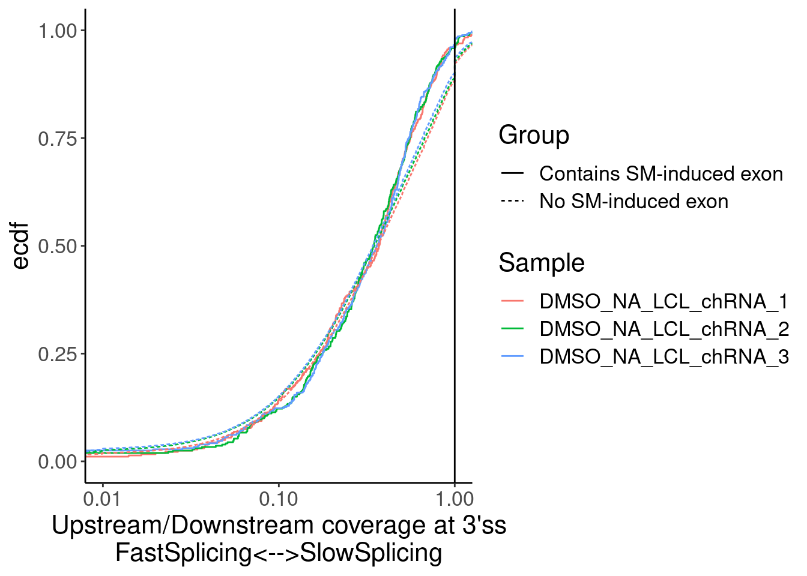
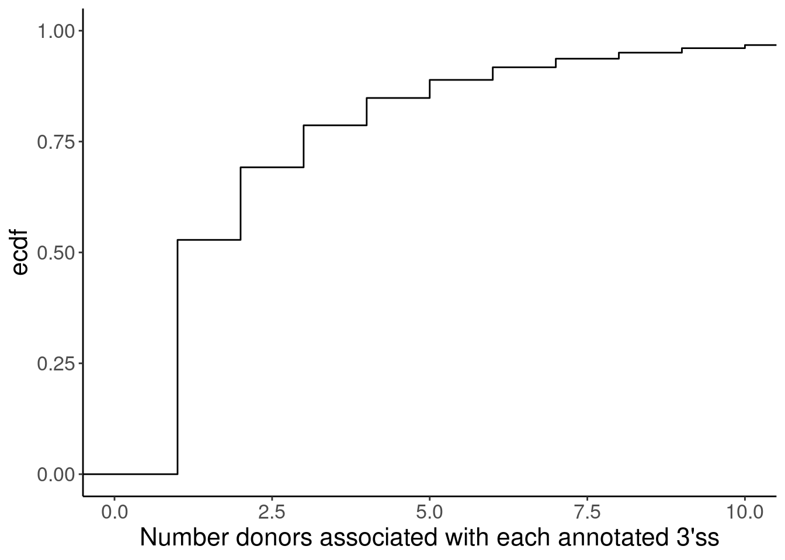
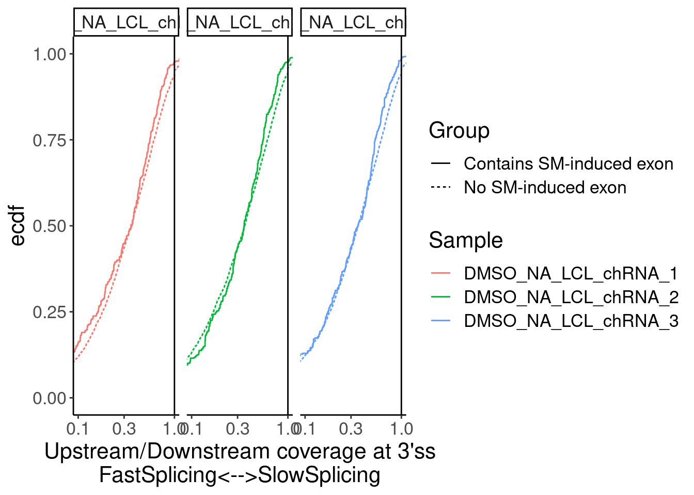

check splicing time of SM affected introns
2023-04-13
Last updated: 2023-04-14
Checks: 6 1
Knit directory:
ChromatinSplicingQTLs/analysis/
This reproducible R Markdown analysis was created with workflowr (version 1.7.0). The Checks tab describes the reproducibility checks that were applied when the results were created. The Past versions tab lists the development history.
The R Markdown is untracked by Git. To know which version of the R
Markdown file created these results, you’ll want to first commit it to
the Git repo. If you’re still working on the analysis, you can ignore
this warning. When you’re finished, you can run
wflow_publish to commit the R Markdown file and build the
HTML.
Great job! The global environment was empty. Objects defined in the global environment can affect the analysis in your R Markdown file in unknown ways. For reproduciblity it’s best to always run the code in an empty environment.
The command set.seed(20191126) was run prior to running
the code in the R Markdown file. Setting a seed ensures that any results
that rely on randomness, e.g. subsampling or permutations, are
reproducible.
Great job! Recording the operating system, R version, and package versions is critical for reproducibility.
Nice! There were no cached chunks for this analysis, so you can be confident that you successfully produced the results during this run.
Great job! Using relative paths to the files within your workflowr project makes it easier to run your code on other machines.
Great! You are using Git for version control. Tracking code development and connecting the code version to the results is critical for reproducibility.
The results in this page were generated with repository version 2ee57a6. See the Past versions tab to see a history of the changes made to the R Markdown and HTML files.
Note that you need to be careful to ensure that all relevant files for
the analysis have been committed to Git prior to generating the results
(you can use wflow_publish or
wflow_git_commit). workflowr only checks the R Markdown
file, but you know if there are other scripts or data files that it
depends on. Below is the status of the Git repository when the results
were generated:
Ignored files:
Ignored: .DS_Store
Ignored: .Rhistory
Ignored: .Rproj.user/
Ignored: analysis/.Rhistory
Ignored: analysis/figure/
Ignored: code/.DS_Store
Ignored: code/.RData
Ignored: code/._report.html
Ignored: code/.ipynb_checkpoints/
Ignored: code/.snakemake/
Ignored: code/APA_Processing/
Ignored: code/Alignments/
Ignored: code/ChromHMM/
Ignored: code/ENCODE/
Ignored: code/ExpressionAnalysis/
Ignored: code/FastqFastp/
Ignored: code/FastqFastpSE/
Ignored: code/FastqSE/
Ignored: code/FineMapping/
Ignored: code/Genotypes/
Ignored: code/H3K36me3_CutAndTag.pdf
Ignored: code/IntronSlopes/
Ignored: code/LR.bed
Ignored: code/LR.seq.bed
Ignored: code/LongReads/
Ignored: code/Metaplots/
Ignored: code/Misc/
Ignored: code/MiscCountTables/
Ignored: code/Multiqc/
Ignored: code/Multiqc_chRNA/
Ignored: code/NonCodingRNA/
Ignored: code/NonCodingRNA_annotation/
Ignored: code/PairwisePi1Traits.P.all.txt.gz
Ignored: code/PeakCalling/
Ignored: code/Phenotypes/
Ignored: code/PlotGruberQTLs/
Ignored: code/PlotQTLs/
Ignored: code/ProCapAnalysis/
Ignored: code/QC/
Ignored: code/QTL_SNP_Enrichment/
Ignored: code/QTLs/
Ignored: code/RPKM_tables/
Ignored: code/ReadLengthMapExperiment/
Ignored: code/ReadLengthMapExperimentResults/
Ignored: code/ReadLengthMapExperimentSpliceCounts/
Ignored: code/ReferenceGenome/
Ignored: code/Rplots.pdf
Ignored: code/Session.vim
Ignored: code/SmallMolecule/
Ignored: code/SplicingAnalysis/
Ignored: code/TODO
Ignored: code/Tehranchi/
Ignored: code/bigwigs/
Ignored: code/bigwigs_FromNonWASPFilteredReads/
Ignored: code/config/.DS_Store
Ignored: code/config/._.DS_Store
Ignored: code/config/.ipynb_checkpoints/
Ignored: code/config/config.local.yaml
Ignored: code/dag.pdf
Ignored: code/dag.png
Ignored: code/dag.svg
Ignored: code/debug.ipynb
Ignored: code/debug_python.ipynb
Ignored: code/deepTools/
Ignored: code/featureCounts/
Ignored: code/featureCountsBasicGtf/
Ignored: code/gwas_summary_stats/
Ignored: code/hyprcoloc/
Ignored: code/igv_session.xml
Ignored: code/isoseqbams/
Ignored: code/log
Ignored: code/logs/
Ignored: code/notebooks/.ipynb_checkpoints/
Ignored: code/pi1/
Ignored: code/rules/.ProcessSmallMoleculeData.smk.swp
Ignored: code/rules/.ipynb_checkpoints/
Ignored: code/rules/OldRules/
Ignored: code/rules/notebooks/
Ignored: code/scratch/
Ignored: code/scripts/.ipynb_checkpoints/
Ignored: code/scripts/GTFtools_0.8.0/
Ignored: code/scripts/__pycache__/
Ignored: code/scripts/liftOverBedpe/liftOverBedpe.py
Ignored: code/snakemake.dryrun.log
Ignored: code/snakemake.log
Ignored: code/snakemake.sbatch.log
Ignored: code/snakemake_profiles/slurm/__pycache__/
Ignored: code/test.introns.bed
Ignored: code/test.introns2.bed
Ignored: code/test.log
Ignored: code/tracks.xml
Ignored: data/.DS_Store
Ignored: data/GWAS_catalog_summary_stats_sources/._list_gwas_summary_statistics_6_Apr_2022-10.csv
Ignored: data/GWAS_catalog_summary_stats_sources/._list_gwas_summary_statistics_6_Apr_2022-11.csv
Ignored: data/GWAS_catalog_summary_stats_sources/._list_gwas_summary_statistics_6_Apr_2022-2.csv
Ignored: data/GWAS_catalog_summary_stats_sources/._list_gwas_summary_statistics_6_Apr_2022-3.csv
Ignored: data/GWAS_catalog_summary_stats_sources/._list_gwas_summary_statistics_6_Apr_2022-4.csv
Ignored: data/GWAS_catalog_summary_stats_sources/._list_gwas_summary_statistics_6_Apr_2022-5.csv
Ignored: data/GWAS_catalog_summary_stats_sources/._list_gwas_summary_statistics_6_Apr_2022-6.csv
Ignored: data/GWAS_catalog_summary_stats_sources/._list_gwas_summary_statistics_6_Apr_2022-7.csv
Ignored: data/GWAS_catalog_summary_stats_sources/._list_gwas_summary_statistics_6_Apr_2022-8.csv
Ignored: data/GWAS_catalog_summary_stats_sources/._list_gwas_summary_statistics_6_Apr_2022.csv
Ignored: data/Metaplots/.DS_Store
Untracked files:
Untracked: analysis/20230413_CheckSplicingTimingOfSM_sensitiveIntrons.Rmd
Untracked: code/envs/maxentscan.yml
Unstaged changes:
Modified: analysis/20230324_MakeFigs.Rmd
Modified: code/rules/ProcessSmallMoleculeData.smk
Modified: code/scripts/GenometracksByGenotype
Note that any generated files, e.g. HTML, png, CSS, etc., are not included in this status report because it is ok for generated content to have uncommitted changes.
There are no past versions. Publish this analysis with
wflow_publish() to start tracking its development.
knitr::opts_chunk$set(echo = TRUE, warning = F, message = F)
library(tidyverse)── Attaching packages ─────────────────────────────────────── tidyverse 1.3.1 ──✔ ggplot2 3.3.6 ✔ purrr 0.3.4
✔ tibble 3.1.7 ✔ dplyr 1.0.9
✔ tidyr 1.2.0 ✔ stringr 1.4.0
✔ readr 2.1.2 ✔ forcats 0.5.1── Conflicts ────────────────────────────────────────── tidyverse_conflicts() ──
✖ dplyr::filter() masks stats::filter()
✖ dplyr::lag() masks stats::lag()library(RColorBrewer)
library(data.table)
Attaching package: 'data.table'The following objects are masked from 'package:dplyr':
between, first, lastThe following object is masked from 'package:purrr':
transposelibrary(edgeR)Loading required package: limma# Set theme
theme_set(
theme_classic() +
theme(text=element_text(size=16, family="Helvetica")))
# I use layer a lot, to rotate long x-axis labels
Rotate_x_labels <- theme(axis.text.x = element_text(angle = 45, vjust = 1, hjust=1))
#test plot
ggplot(mtcars, aes(x=mpg, y=cyl)) +
geom_point()
Intro
Yang hypothesizes that cryptic exons induced by risdiplam will be in host introns that are spliced slower than typical introns. The idea is that the small molecule needs time to have its effect, and it is in competition with the splicing of the canonical host introns. To test this, I will assess the splicing timing of introns using the ratio of coverage in 25nt window upstream of 3’ss, versus 25 nt window downstream of 3’ss for each intron. I hypothesize that introns that host a risdiplam-induced cryptic exon will have higher upstream/downstream ratio than random set of introns. I will specifically look at the DMSO control samples of chRNA.
UpstreamCoverage <- read_tsv("../code/SmallMolecule/3ssWindows/Upstream.counts.txt") %>%
rename_at(-c(1:6), ~str_replace(.x, "SmallMolecule/AlignmentsPass2/(.+?)/Aligned.sortedByCoord.out.bam", "\\1")) %>%
dplyr::select(-c(1:3), -5, -6) %>%
column_to_rownames("name") %>%
as.matrix()
DownstreamCoverage <- read_tsv("../code/SmallMolecule/3ssWindows/Down.counts.txt") %>%
rename_at(-c(1:6), ~str_replace(.x, "SmallMolecule/AlignmentsPass2/(.+?)/Aligned.sortedByCoord.out.bam", "\\1")) %>%
dplyr::select(-c(1:3), -5, -6) %>%
column_to_rownames("name") %>%
as.matrix()
UpstreamCoverage.DMSO.chRNA <- UpstreamCoverage %>%
as.data.frame() %>%
dplyr::select(contains("DMSO") & contains("chRNA")) %>%
as.matrix()
DownstreamCoverage.DMSO.chRNA <- DownstreamCoverage %>%
as.data.frame() %>%
dplyr::select(contains("DMSO") & contains("chRNA")) %>%
as.matrix()
hist(log10(UpstreamCoverage + DownstreamCoverage + 1))hist(log10(apply(UpstreamCoverage + DownstreamCoverage, 1, sum) + 1))Let’s process samples an a per-sample basis, so we can use the replicates. Also, I will filter out 3’ss in each sample with less than 10 reads between the upstream and downstream window. Let’s add a small psueodcount to everything to not get divide by 0 errors.
RisdiplamSensitiveIntrons <- read_tsv("../output/SmallMoleculeGAGT_CassetteExonclusters.bed", col_names=c("chrom", "start", "stop", "name", "score", "strand", "thickStart", "thickEnd", "color")) %>%
filter(str_detect(name, "junc.skipping")) %>%
mutate(SpliceAcceptor = if_else(
strand == "+",
paste(chrom, stop, sep="_"),
paste(chrom, start, sep="_")
)) %>%
dplyr::select(GAGTIntron=name, name=SpliceAcceptor) %>%
mutate(GAGTIntron = str_replace(GAGTIntron, "junc.skipping_clu_.+?_(chr.+?)$", "\\1"))
Merged <- bind_rows(
DownstreamCoverage %>%
as.data.frame() %>%
dplyr::select(contains("DMSO") & contains("chRNA")) %>%
rownames_to_column("name") %>%
mutate(Window = "Down"),
UpstreamCoverage %>%
as.data.frame() %>%
dplyr::select(contains("DMSO") & contains("chRNA")) %>%
rownames_to_column("name") %>%
mutate(Window = "Up")
) %>%
pivot_longer(contains("DMSO"),names_to = "Sample") %>%
mutate(value = value + 0.1) %>%
pivot_wider(names_from="Window", values_from = "value") %>%
mutate(sum = Down + Up) %>%
filter(sum >= 10) %>%
mutate(Ratio = Up/Down) %>%
left_join(RisdiplamSensitiveIntrons) %>%
mutate(Group = if_else(is.na(GAGTIntron), "No SM-induced exon", "Contains SM-induced exon"))
Merged %>%
ggplot(aes(x=Ratio, color=Sample)) +
stat_ecdf() +
geom_vline(xintercept=1) +
scale_x_continuous(trans="log10") +
labs(y="ecdf")Merged %>%
ggplot(aes(x=Ratio, color=Sample)) +
stat_ecdf(aes(linetype=Group)) +
geom_vline(xintercept=1) +
scale_x_continuous(trans="log10") +
labs(y="ecdf") +
coord_cartesian(c(1E-2, 1)) +
labs(x="Upstream/Downstream coverage at 3'ss\nFastSplicing<-->SlowSplicing")
Merged %>%
ggplot(aes(x=Ratio, color=Sample)) +
stat_ecdf(aes(linetype=Group)) +
geom_vline(xintercept=1) +
labs(y="ecdf") +
coord_cartesian(c(1E-2, 1)) +
labs(x="Upstream/Downstream coverage at 3'ss\nFastSplicing<-->SlowSplicing")Yang suggested distinguishing introns by ED50…
ModelFits <- read_tsv("../code/SmallMolecule/FitModels/polyA_GAGTIntrons.tsv.gz")
Merged %>%
# filter(!is.na(GAGTIntron)) %>%
left_join(
ModelFits %>%
filter(param=="ED50:(Intercept)"),
by=c("GAGTIntron"="junc")
) %>%
mutate(ED50Group = cut_number(Estimate, 4)) %>%
ggplot(aes(x=Ratio, color=ED50Group)) +
stat_ecdf() +
geom_vline(xintercept=1) +
labs(y="ecdf") +
scale_x_continuous(trans="log10") +
coord_cartesian(c(1E-2, 1)) +
scale_color_brewer(palette = "YlGnBu", na.value="black", direction=-1) +
facet_wrap(~Sample) +
labs(x="Upstream/Downstream coverage at 3'ss\nFastSplicing<-->SlowSplicing")Yang suggested matching introns by length…
Introns <- read_tsv("../code/SmallMolecule/FullSpliceSiteAnnotations/JuncfilesMerged.annotated.basic.bed.gz") %>%
filter(known_junction == 0) %>%
mutate(SpliceAcceptor = if_else(
strand == "+",
paste(chrom, end, sep="_"),
paste(chrom, start, sep="_")
)) %>%
add_count(SpliceAcceptor)
ggplot(Introns, aes(x=n)) +
stat_ecdf() +
coord_cartesian(x=c(0,10)) +
labs(x="Number donors associated with each annotated 3'ss", y="ecdf")
Merged %>%
left_join(
ModelFits %>%
filter(param=="ED50:(Intercept)"),
by=c("GAGTIntron"="junc")
) %>%
mutate(ED50Group = cut_number(Estimate, 4)) %>%
inner_join(Introns, by=c("name"="SpliceAcceptor")) %>%
mutate(Length = end - start) %>%
distinct(chrom, start, end, .keep_all=T) %>%
ggplot(aes(x=Length, color=ED50Group)) +
stat_ecdf() +
scale_x_continuous(trans="log10") +
coord_cartesian(xlim=c(100, 1E5)) +
labs(y="ecdf") +
scale_color_brewer(palette = "YlGnBu", na.value="black", direction=-1) +
labs(x="Intron length by group")Merged %>%
left_join(
ModelFits %>%
filter(param=="ED50:(Intercept)"),
by=c("GAGTIntron"="junc")
) %>%
inner_join(Introns, by=c("name"="SpliceAcceptor")) %>%
mutate(Length = end - start) %>%
mutate(LengthGroup = cut_number(Length, 5)) %>%
distinct(chrom, start, end, .keep_all=T) %>%
ggplot(aes(x=Ratio, color=LengthGroup)) +
stat_ecdf() +
scale_x_continuous(trans="log10") +
coord_cartesian(c(1E-1, 1)) +
labs(y="ecdf") +
scale_color_brewer(palette = "YlGnBu", na.value="black", direction=-1) +
labs(x="Upstream/Downstream coverage at 3'ss\nFastSplicing<-->SlowSplicing", color="Intron length ntile")Ok, so there is some confounding by intron length… Longer introns are spliced faster (which i find surprising anyway), and the small-molecule affected introns tend to be slightly longer. So if you correct for the length effect, either by comparing length-matched groups or fitting a model with length as covariate, perhaps we would see that the small molecule effected introns are in fact spliced slow.
lm.fit <- Merged %>%
inner_join(Introns, by=c("name"="SpliceAcceptor")) %>%
mutate(Dummy_1_ForIntronsWithCrypticExons = if_else(is.na(GAGTIntron), 0, 1)) %>%
mutate(Length = log10(end - start)) %>%
mutate(Response = log10(Ratio)) %>%
lm(Response ~ Length + Dummy_1_ForIntronsWithCrypticExons, data=.)
summary(lm.fit)
Call:
lm(formula = Response ~ Length + Dummy_1_ForIntronsWithCrypticExons,
data = .)
Residuals:
Min 1Q Median 3Q Max
-3.7029 -0.2219 0.0768 0.3164 2.9021
Coefficients:
Estimate Std. Error t value Pr(>|t|)
(Intercept) -0.338914 0.002776 -122.100 < 2e-16 ***
Length -0.055253 0.000771 -71.662 < 2e-16 ***
Dummy_1_ForIntronsWithCrypticExons -0.025155 0.006006 -4.189 2.81e-05 ***
---
Signif. codes: 0 '***' 0.001 '**' 0.01 '*' 0.05 '.' 0.1 ' ' 1
Residual standard error: 0.4536 on 724009 degrees of freedom
Multiple R-squared: 0.007087, Adjusted R-squared: 0.007085
F-statistic: 2584 on 2 and 724009 DF, p-value: < 2.2e-16library(MASS)
# library(sfsmisc)
rlm.fit <- Merged %>%
inner_join(Introns, by=c("name"="SpliceAcceptor")) %>%
mutate(Dummy_1_ForIntronsWithCrypticExons = if_else(is.na(GAGTIntron), 0, 1)) %>%
mutate(Length = log10(end - start)) %>%
mutate(Response = log10(Ratio)) %>%
rlm(Response ~ Length + Dummy_1_ForIntronsWithCrypticExons, data=.)
summary(rlm.fit)
Call: rlm(formula = Response ~ Length + Dummy_1_ForIntronsWithCrypticExons,
data = .)
Residuals:
Min 1Q Median 3Q Max
-3.74099 -0.26470 0.03432 0.27396 2.85295
Coefficients:
Value Std. Error t value
(Intercept) -0.3249 0.0024 -137.9842
Length -0.0471 0.0007 -72.0779
Dummy_1_ForIntronsWithCrypticExons -0.0152 0.0051 -2.9767
Residual standard error: 0.401 on 724009 degrees of freedomOk, so somewhat significant in a direction consistent with the hypothesis.. Wait, I feel I did that oddly. t makes more natural sense for the Dummy_1_ForIntronsWithCrypticExons to be a response…
lm.fit <- Merged %>%
inner_join(Introns, by=c("name"="SpliceAcceptor")) %>%
mutate(Dummy_1_ForIntronsWithCrypticExons = if_else(is.na(GAGTIntron), 0, 1)) %>%
mutate(Length = log10(end - start)) %>%
mutate(Response = log10(Ratio)) %>%
lm(Dummy_1_ForIntronsWithCrypticExons ~ Length + Response, data=.)
summary(lm.fit)
Call:
lm(formula = Dummy_1_ForIntronsWithCrypticExons ~ Length + Response,
data = .)
Residuals:
Min 1Q Median 3Q Max
-0.01593 -0.00932 -0.00801 -0.00657 0.99709
Coefficients:
Estimate Std. Error t value Pr(>|t|)
(Intercept) -0.0019304 0.0005487 -3.518 0.000435 ***
Length 0.0026496 0.0001514 17.502 < 2e-16 ***
Response -0.0009633 0.0002300 -4.189 2.81e-05 ***
---
Signif. codes: 0 '***' 0.001 '**' 0.01 '*' 0.05 '.' 0.1 ' ' 1
Residual standard error: 0.08877 on 724009 degrees of freedom
Multiple R-squared: 0.0004674, Adjusted R-squared: 0.0004647
F-statistic: 169.3 on 2 and 724009 DF, p-value: < 2.2e-16Ok, the sign of the effect and P-value are more or less the same…
Now Let’s do the length matching thing and plot as ecdf more more intuitive visualization of the effect…
#Get control introns as the introns just bigger or just smaller than the test introns in a list of introns ranked by length
Merged.tidyForMatching <- Merged %>%
left_join(
ModelFits %>%
filter(param=="ED50:(Intercept)"),
by=c("GAGTIntron"="junc")
) %>%
mutate(ED50Group = cut_number(Estimate, 4)) %>%
inner_join(Introns, by=c("name"="SpliceAcceptor")) %>%
mutate(Length = end - start) %>%
group_by(Sample) %>%
arrange(Length) %>%
mutate(LaggingIntronGroup = lag(Group)) %>%
mutate(LeadingIntronGroup = lead(Group)) %>%
ungroup()
Merged.WithLengthMatchedControlIntrons <-
bind_rows(
Merged.tidyForMatching %>%
filter(Group == "Contains SM-induced exon"),
Merged.tidyForMatching %>%
filter(!(Group == "Contains SM-induced exon") & LaggingIntronGroup =="Contains SM-induced exon"),
Merged.tidyForMatching %>%
filter(!(Group == "Contains SM-induced exon") & LeadingIntronGroup =="Contains SM-induced exon")
)
P <- Merged.WithLengthMatchedControlIntrons %>%
ggplot(aes(x=Length, color=Group)) +
stat_ecdf() +
scale_x_continuous(trans="log10") +
labs(y="ecdf", title="No SM-induced exons are length matched")
PP +facet_wrap(~Group)Merged.WithLengthMatchedControlIntrons %>%
ggplot(aes(x=Ratio, color=Sample)) +
stat_ecdf(aes(linetype=Group)) +
geom_vline(xintercept=1) +
scale_x_continuous(trans="log10") +
labs(y="ecdf") +
coord_cartesian(c(1E-1, 1)) +
labs(x="Upstream/Downstream coverage at 3'ss\nFastSplicing<-->SlowSplicing")Merged.WithLengthMatchedControlIntrons %>%
ggplot(aes(x=Ratio, color=Sample)) +
stat_ecdf(aes(linetype=Group)) +
geom_vline(xintercept=1) +
scale_x_continuous(trans="log10") +
labs(y="ecdf") +
coord_cartesian(c(1E-1, 1)) +
facet_wrap(~Sample) +
labs(x="Upstream/Downstream coverage at 3'ss\nFastSplicing<-->SlowSplicing")
Merged.WithLengthMatchedControlIntrons %>%
ggplot(aes(x=Ratio, color=ED50Group)) +
stat_ecdf(aes(linetype=Group)) +
geom_vline(xintercept=1) +
scale_x_continuous(trans="log10") +
scale_color_brewer(palette = "YlGnBu", na.value="black", direction=-1) +
labs(y="ecdf") +
coord_cartesian(c(1E-2, 1)) +
labs(x="Upstream/Downstream coverage at 3'ss\nFastSplicing<-->SlowSplicing") +
facet_wrap(~Sample)Ok but in the last plot I didn’t length match per ED50 group… let’s do that…
Merged.tidyForMatching <- Merged %>%
left_join(
ModelFits %>%
filter(param=="ED50:(Intercept)"),
by=c("GAGTIntron"="junc")
) %>%
mutate(ED50Group = cut_number(Estimate, 4)) %>%
inner_join(Introns, by=c("name"="SpliceAcceptor")) %>%
mutate(Length = end - start) %>%
group_by(Sample) %>%
arrange(Length) %>%
mutate(LaggingIntronGroup = lag(ED50Group)) %>%
mutate(LeadingIntronGroup = lead(ED50Group)) %>%
ungroup()
Merged.WithLengthMatchedControlIntrons <-
bind_rows(
Merged.tidyForMatching %>%
filter(Group == "Contains SM-induced exon"),
Merged.tidyForMatching %>%
filter(!Group == "Contains SM-induced exon" & !is.na(LaggingIntronGroup)) %>%
mutate(ED50Group = LaggingIntronGroup),
Merged.tidyForMatching %>%
filter(!Group == "Contains SM-induced exon" & !is.na(LeadingIntronGroup)) %>%
mutate(ED50Group = LeadingIntronGroup)
)
P <- Merged.WithLengthMatchedControlIntrons %>%
ggplot(aes(x=Length, color=ED50Group)) +
stat_ecdf(aes(linetype=Group)) +
scale_x_continuous(trans="log10") +
scale_color_brewer(palette = "YlGnBu", na.value="black", direction=-1) +
labs(y="ecdf", title="No SM-induced exons are length matched")
PP +facet_wrap(~Group)Merged.WithLengthMatchedControlIntrons %>%
ggplot(aes(x=Ratio, color=ED50Group)) +
stat_ecdf(aes(linetype=Group)) +
geom_vline(xintercept=1) +
scale_x_continuous(trans="log10") +
scale_color_brewer(palette = "YlGnBu", na.value="black", direction=-1) +
labs(y="ecdf") +
coord_cartesian(c(1E-2, 1)) +
labs(x="Upstream/Downstream coverage at 3'ss\nFastSplicing<-->SlowSplicing") +
facet_wrap(~Sample)Merged.WithLengthMatchedControlIntrons %>%
filter(ED50Group == "[20.4,843]") %>%
ggplot(aes(x=Ratio, color=ED50Group)) +
stat_ecdf(aes(linetype=Group)) +
geom_vline(xintercept=1) +
scale_x_continuous(trans="log10") +
scale_color_brewer(palette = "YlGnBu", na.value="black", direction=-1) +
labs(y="ecdf") +
coord_cartesian(c(1E-2, 1)) +
labs(x="Upstream/Downstream coverage at 3'ss\nFastSplicing<-->SlowSplicing") +
facet_wrap(~Sample)Overall not so convincing…
One other thing Yang asked for some of the same analysis but looking for correlations with splice site scores to explain where the crpyic exons are… Like do the cryptic exons have particular strong upstream 3’ss? I’m not sure why it would make sense to look at any other splice site. Though, while I’m scoring splice sites I mine as well also just verify a previous observation that introns with weak splice sites are spliced slower, as a positive control that I am doing these analysis correctly.
ThreeSS.Scores <- read_tsv("../code/SmallMolecule/MaxEntScan/3ss.tsv.gz", col_names=c("Seq", "Score"))
ThreeSS.Seqs <- read_tsv("../code/SmallMolecule/MaxEntScan/3ss.seqs.bed.gz", col_names=c("chrom", "start", "stop", "AcceptorName", "score", "strand", "Seq")) %>%
inner_join(ThreeSS.Scores) %>%
dplyr::select(AcceptorName, Seq, Score) %>%
distinct()
Merged %>%
inner_join(ThreeSS.Seqs, by=c("name"="AcceptorName")) %>%
mutate(AcceptorScoreGroup = cut_number(Score, 4)) %>%
ggplot(aes(x=Ratio, color=AcceptorScoreGroup)) +
stat_ecdf() +
geom_vline(xintercept=1) +
scale_x_continuous(trans="log10") +
scale_color_brewer(palette = "YlGnBu", na.value="black", direction=-1) +
labs(y="ecdf") +
coord_cartesian(c(1E-2, 1)) +
labs(x="Upstream/Downstream coverage at 3'ss\nFastSplicing<-->SlowSplicing") +
facet_wrap(~Sample)Ok, there seems to be a sensible effect wherein 3’ss in the worst quartile of MaxEntScores have slower splicing…
Now let’s check the scores of the downstream 3’ss of host introns with or without the induced cryptic exons…
Merged %>%
inner_join(ThreeSS.Seqs, by=c("name"="AcceptorName")) %>%
distinct(name, .keep_all=T) %>%
ggplot(aes(x=Score, color=Group)) +
stat_ecdf(aes()) +
# geom_vline(xintercept=1) +
# scale_x_continuous(trans="log10") +
# scale_color_brewer(palette = "YlGnBu", na.value="black", direction=-1) +
labs(y="ecdf") +
coord_cartesian(c(0, 15)) +
labs(x="3ss MaxEntScore")Merged %>%
left_join(
ModelFits %>%
filter(param=="ED50:(Intercept)"),
by=c("GAGTIntron"="junc")
) %>%
mutate(ED50Group = cut_number(Estimate, 4)) %>%
inner_join(ThreeSS.Seqs, by=c("name"="AcceptorName")) %>%
distinct(name, .keep_all=T) %>%
ggplot(aes(x=Score, color=ED50Group)) +
stat_ecdf(aes(linetype=Group)) +
# geom_vline(xintercept=1) +
# scale_x_continuous(trans="log10") +
scale_color_brewer(palette = "YlGnBu", na.value="black", direction=-1) +
labs(y="ecdf") +
coord_cartesian(c(0, 15)) +
labs(x="3ss MaxEntScore")Ok, now let’s check for a correlation between MaxEntScore and intron length…
inner_join(Introns, ThreeSS.Seqs, by=c("SpliceAcceptor"="AcceptorName")) %>%
mutate(Length = end - start) %>%
mutate(LengthGroup = cut_number(Length, 5)) %>%
ggplot(aes(x=Score, color=LengthGroup)) +
stat_ecdf() +
scale_color_brewer(palette = "YlGnBu", na.value="black", direction=-1) +
labs(y="ecdf") +
coord_cartesian(c(0, 15)) +
labs(x="3ss MaxEntScore")inner_join(Introns, ThreeSS.Seqs, by=c("SpliceAcceptor"="AcceptorName")) %>%
mutate(Length = end - start) %>%
ggplot(aes(y=Score, x=log10(Length))) +
geom_hex(bins=100) +
geom_smooth(method='lm') +
scale_x_continuous(trans='log10') +
labs(x="IntronLength", y="3ss MaxEntScore")Hmmm, ok maybe there is some odd relationship with 3’ss MaxEntScore and length.. In any case, now let’s compare to length-matched control introns just in case there is correlation between length and 3ss MaxEntScore.
Merged.tidyForMatching <- Merged %>%
left_join(
ModelFits %>%
filter(param=="ED50:(Intercept)"),
by=c("GAGTIntron"="junc")
) %>%
mutate(ED50Group = cut_number(Estimate, 4)) %>%
inner_join(Introns, by=c("name"="SpliceAcceptor")) %>%
mutate(Length = end - start) %>%
group_by(Sample) %>%
arrange(Length) %>%
mutate(LaggingIntronGroup = lag(ED50Group)) %>%
mutate(LeadingIntronGroup = lead(ED50Group)) %>%
ungroup()
Merged.WithLengthMatchedControlIntrons <-
bind_rows(
Merged.tidyForMatching %>%
filter(Group == "Contains SM-induced exon"),
Merged.tidyForMatching %>%
filter(!Group == "Contains SM-induced exon" & !is.na(LaggingIntronGroup)) %>%
mutate(ED50Group = LaggingIntronGroup),
Merged.tidyForMatching %>%
filter(!Group == "Contains SM-induced exon" & !is.na(LeadingIntronGroup)) %>%
mutate(ED50Group = LeadingIntronGroup)
) %>%
inner_join(ThreeSS.Seqs, by=c("name"="AcceptorName")) %>%
distinct(name, .keep_all=T)
P <- Merged.WithLengthMatchedControlIntrons %>%
ggplot(aes(x=Length, color=ED50Group)) +
stat_ecdf(aes(linetype=Group)) +
scale_x_continuous(trans="log10") +
scale_color_brewer(palette = "YlGnBu", na.value="black", direction=-1) +
labs(y="ecdf", title="No SM-induced exons are length matched")
PP + facet_wrap(~Group)Merged.WithLengthMatchedControlIntrons %>%
ggplot(aes(x=Score, color=ED50Group)) +
stat_ecdf(aes(linetype=Group)) +
# geom_vline(xintercept=1) +
# scale_x_continuous(trans="log10") +
scale_color_brewer(palette = "YlGnBu", na.value="black", direction=-1) +
labs(y="ecdf") +
coord_cartesian(c(0, 15)) +
labs(x="3ss MaxEntScore") +
facet_wrap(~ED50Group)Ok, nothing obvious here. But since Yang seemed to be satisfied enough to use the lm model results for assessing relationship between 3ss coverage and host intron having cryptic exon, let’s do the same sort of linear model with the DummyVariable as the response, and Length and MaxEntScore as predictors…
lm.fit <- Merged %>%
inner_join(ThreeSS.Seqs, by=c("name"="AcceptorName")) %>%
inner_join(Introns, by=c("name"="SpliceAcceptor")) %>%
distinct(name, .keep_all=T) %>%
mutate(Dummy_1_ForIntronsWithCrypticExons = if_else(is.na(GAGTIntron), 0, 1)) %>%
mutate(Length = log10(end - start)) %>%
lm(Dummy_1_ForIntronsWithCrypticExons ~ Length + Score, data=.)
summary(lm.fit)
Call:
lm(formula = Dummy_1_ForIntronsWithCrypticExons ~ Length + Score,
data = .)
Residuals:
Min 1Q Median 3Q Max
-0.00522 -0.00400 -0.00374 -0.00345 0.99787
Coefficients:
Estimate Std. Error t value Pr(>|t|)
(Intercept) 1.625e-03 1.133e-03 1.435 0.1514
Length 2.366e-04 2.768e-04 0.855 0.3927
Score 1.467e-04 7.274e-05 2.017 0.0436 *
---
Signif. codes: 0 '***' 0.001 '**' 0.01 '*' 0.05 '.' 0.1 ' ' 1
Residual standard error: 0.06078 on 97084 degrees of freedom
Multiple R-squared: 5.216e-05, Adjusted R-squared: 3.156e-05
F-statistic: 2.532 on 2 and 97084 DF, p-value: 0.07949Ok.. Pval is 0.0436… I don’t think we shold take anything from this…
sessionInfo()R version 4.2.0 (2022-04-22)
Platform: x86_64-pc-linux-gnu (64-bit)
Running under: CentOS Linux 7 (Core)
Matrix products: default
BLAS/LAPACK: /software/openblas-0.3.13-el7-x86_64/lib/libopenblas_haswellp-r0.3.13.so
locale:
[1] LC_CTYPE=en_US.UTF-8 LC_NUMERIC=C LC_TIME=C
[4] LC_COLLATE=C LC_MONETARY=C LC_MESSAGES=C
[7] LC_PAPER=C LC_NAME=C LC_ADDRESS=C
[10] LC_TELEPHONE=C LC_MEASUREMENT=C LC_IDENTIFICATION=C
attached base packages:
[1] stats graphics grDevices utils datasets methods base
other attached packages:
[1] MASS_7.3-56 edgeR_3.38.4 limma_3.52.4 data.table_1.14.2
[5] RColorBrewer_1.1-3 forcats_0.5.1 stringr_1.4.0 dplyr_1.0.9
[9] purrr_0.3.4 readr_2.1.2 tidyr_1.2.0 tibble_3.1.7
[13] ggplot2_3.3.6 tidyverse_1.3.1
loaded via a namespace (and not attached):
[1] httr_1.4.3 sass_0.4.1 splines_4.2.0 bit64_4.0.5
[5] vroom_1.5.7 jsonlite_1.8.0 modelr_0.1.8 bslib_0.3.1
[9] assertthat_0.2.1 highr_0.9 cellranger_1.1.0 yaml_2.3.5
[13] pillar_1.7.0 backports_1.4.1 lattice_0.20-45 glue_1.6.2
[17] digest_0.6.29 promises_1.2.0.1 rvest_1.0.2 colorspace_2.0-3
[21] Matrix_1.5-3 htmltools_0.5.2 httpuv_1.6.5 pkgconfig_2.0.3
[25] broom_0.8.0 haven_2.5.0 scales_1.2.0 later_1.3.0
[29] tzdb_0.3.0 git2r_0.30.1 mgcv_1.8-40 generics_0.1.2
[33] farver_2.1.0 ellipsis_0.3.2 withr_2.5.0 hexbin_1.28.3
[37] cli_3.3.0 magrittr_2.0.3 crayon_1.5.1 readxl_1.4.0
[41] evaluate_0.15 fs_1.5.2 fansi_1.0.3 nlme_3.1-157
[45] xml2_1.3.3 tools_4.2.0 hms_1.1.1 lifecycle_1.0.1
[49] munsell_0.5.0 reprex_2.0.1 locfit_1.5-9.7 compiler_4.2.0
[53] jquerylib_0.1.4 rlang_1.0.2 grid_4.2.0 rstudioapi_0.13
[57] labeling_0.4.2 rmarkdown_2.14 gtable_0.3.0 DBI_1.1.2
[61] R6_2.5.1 lubridate_1.8.0 knitr_1.39 fastmap_1.1.0
[65] bit_4.0.4 utf8_1.2.2 workflowr_1.7.0 rprojroot_2.0.3
[69] stringi_1.7.6 parallel_4.2.0 Rcpp_1.0.8.3 vctrs_0.4.1
[73] dbplyr_2.1.1 tidyselect_1.1.2 xfun_0.30